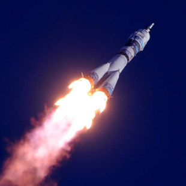

Проект «Пантеон» - полёты на Марс
Пункт назначения: Пантеон, Марс
Пантеон
Олимп
Первый город на планете Марс недалеко от горы Олимп
Факты
- 4
- четвёртая планета по удалённости от Солнца
- 7
- седьмая по размерам планета Солнечной системы
- 10,7%
- массы Земли (ваш вес будет в 3 раза меньше, чем на Земле)
- 2
- спутника вместо Луны (как картошка, только больше)
- 21 км
- высота самой высокой горы Марса
- +20
- максимальная температура на поверхности
Марс. Вспомнить всё
-
Что такое Марс?
Планета Солнечной системы, названа в честь Марса — древнеримского бога войны. Иногда Марс называют «красной планетой» из-за красного оттенка поверхности, придаваемого ей оксидом железа.
Особенности планеты — наличие слабой атмосферы, состоящей в основном из углекислого газа, времена года, пылевые бури, сильная эрозия почв.
-
Где это? Как туда доехать?
Расстояние до Марса — почти 56 миллионов километров. Чтобы преодолеть такое расстояние, нужно лететь на межпланетном корабле 7-8 месяцев.

От идеи до реализации
Илон Маск. Гений или безумец?
Канадско-американский инженер, предприниматель, изобретатель и инвестор; миллиардер. Основатель компаний SpaceX и X.com, позже переименованной в PayPal. Планирует потратить большую часть накоплений на реализацию своей мечты, а также мечты многих тысяч романтиков, писателей, учёных: создать внеземную цивилизацию.
Мы должны сделать эту мечту реальностью за наше время жизни. Любой человек, который пожелает отправиться на Марс, должен иметь такую возможность
— заявил Маск на Международной астронавтической конференции в Гвадалахаре (Мексика). Он обосновал необходимость своего проекта вопросом выживания человечества, которое для своего сохранения должно стать «космическим видом». Илон поставил перед собой цель: сократить стоимость вывода кораблей в космос в 10 раз, что станет первым шагом для человечества в освоении Марса.

Стоимость перелёта
Высадка двоих астронавтов на Луну обошлась США в 20 млрд. долларов. Маск стремится сократить эту цифру в 20 000 раз, что составит 500 000 долларов на человека.
Подводные камни в масштабах космоса
Жить или выживать?
Чем отличаются Земля и Марс? Какие условия встретят новых поселенцев?
Марс холодная и засушливая планета, на которой есть своя атмосфера, на 96% состоящая из углекислых газов, а минимальная температура опускается до -140 градусов по Цельсию. Каждый год по весне на планете случаются пылевые бури, длящиеся от нескольких часов до нескольких месяцев.
На планете отсутствует магнитное поле, поэтому радиационный фон повышен. А низкая гравитация при длительном пребывании на Марсе сделает возвращение на Землю невозможным. Полёт на Марс — билет в один конец с целью создать новую цивилизацию.
Организация жизни в колонии

В основе жилых помещений лежат надувные компоненты — спальня, рабочая зона, гостиная, парник для выращивания зелени — 50 м2 на человека. Благодаря этим компонентам, колонисты смогут принять душ, приготовить свежую пищу, носить обычную одежду. Весь комплекс соединен сетью ходов.
ПодробнееДеньги приготовил. Когда вылетаем?
Первый «частный» полёт на Марс осуществит в 2018 году в беспилотном варианте корабль Dragon V2 с помощью тяжёлой ракеты Falcon Heavy. После этого запланированы две миссии в 2020 году, как минимум одна в 2022-м и, вероятно, пилотируемая миссия через два года с достижением Марса в 2025 году.
Для всех желающих открыты курсы подготовки.
Критерии отбора